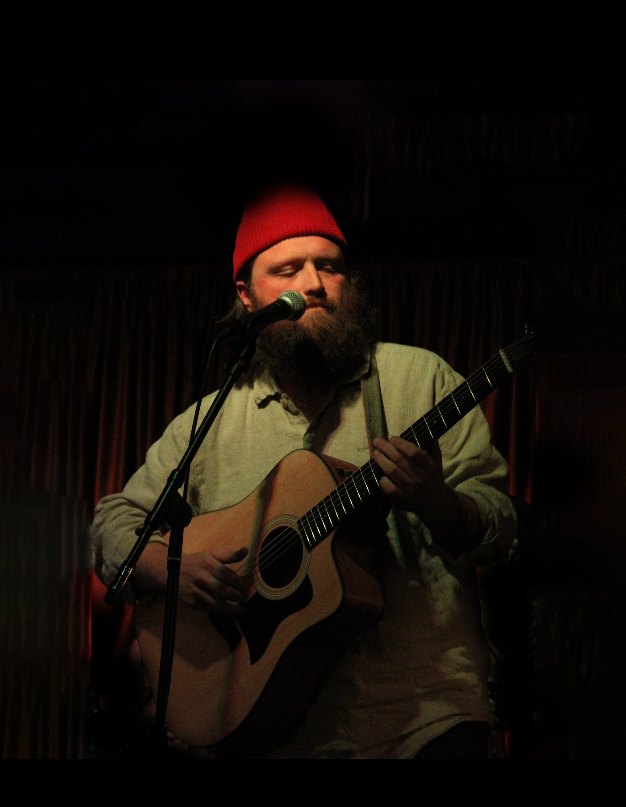

See Chris Live
Date
Time
Location
Town

Chris O'Driscoll
Equally at home with a guitar, banjo, harmonica, or microphone, Chris O'Driscoll combines folk, jazz, country and blues into his unique blend of Americana music. Originally hailing from America's heartland, he has called New York his home for over a decade. Currently based in the Catskill Mountains/Hudson Valley regions, his music explores our relationships with nature, the unknown, ourselves and each other.